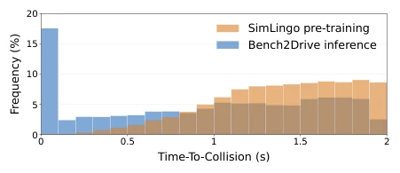
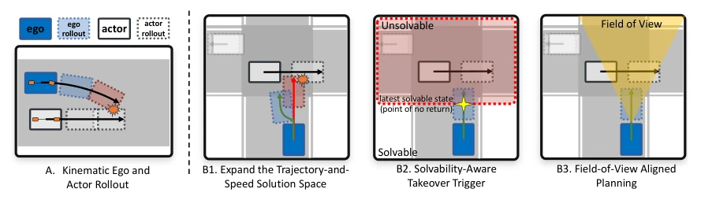
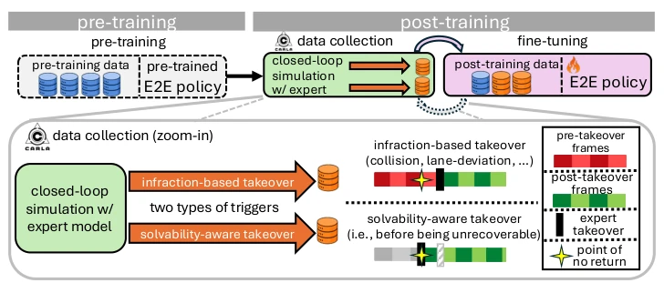
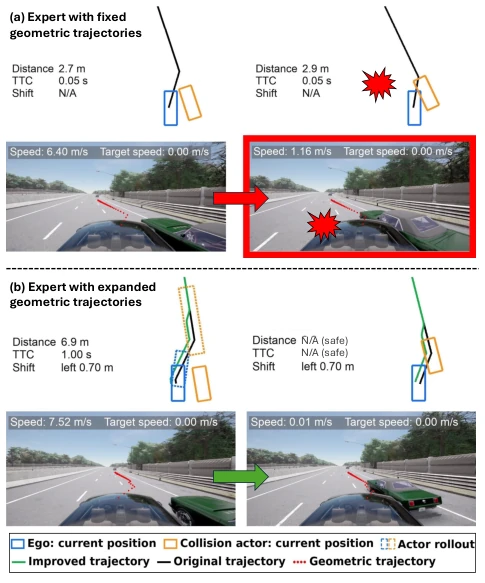
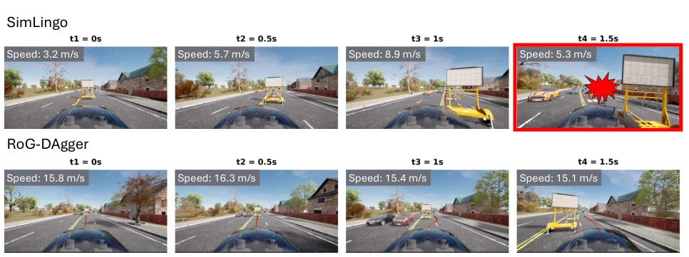
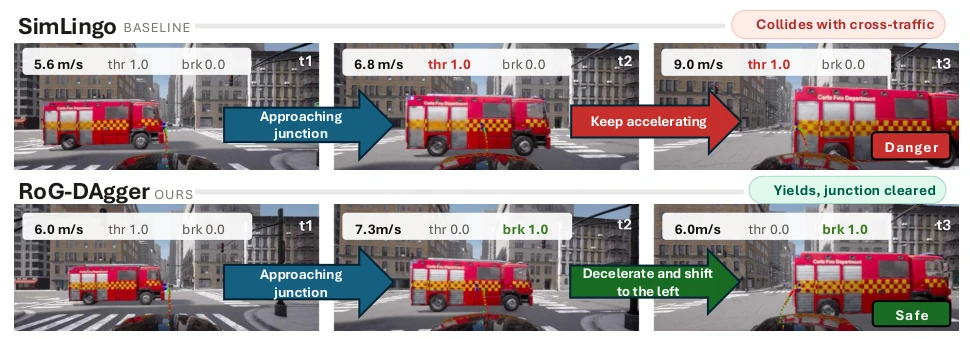
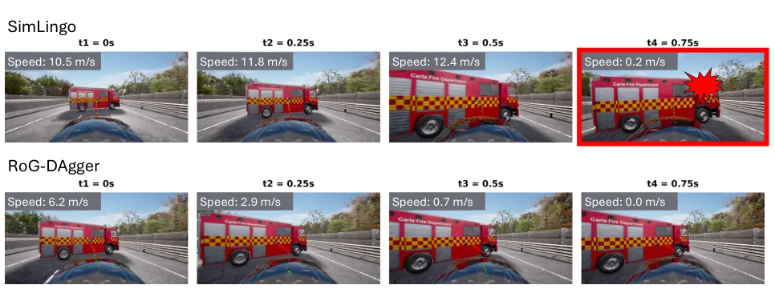
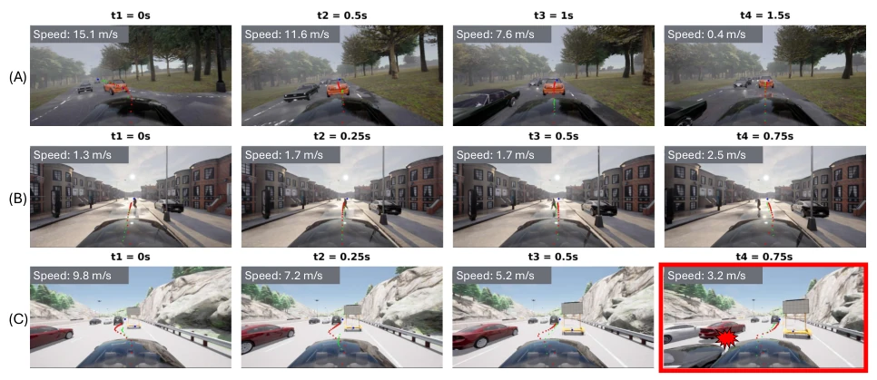
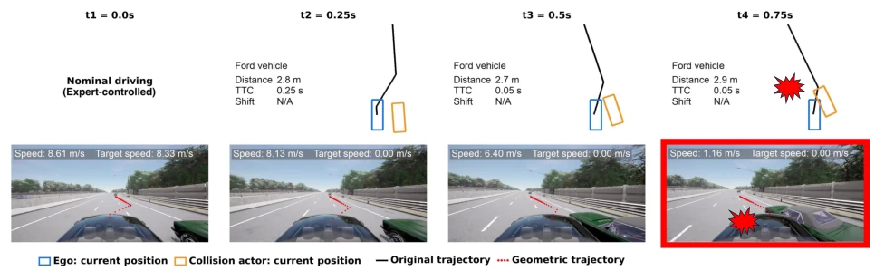
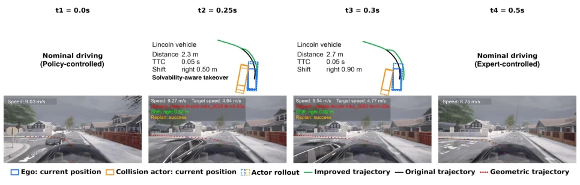

This paper provides a "post-operative rehabilitation" for E2E driving models. RoG-DAgger attempts to fix DAgger's three major flaws using kinematic rollout: experts only brake, takeover is too late, and field of view is too wide. Although claimed as "end-to-end", it essentially relies on expert data feeding, but this time the feeding is more targeted. However, the rollout itself is an approximate model, assuming surrounding vehicles do not react, which is somewhat like "plugging one's ears to steal a bell" in complex interactions. The victory in the CARLA simulator is still far from real cars, but as a closed-loop training framework, it is indeed smarter than simply imitating expert trajectories, at least knowing when to "save the day". Furthermore, it proves that student-compatible supervision is more important than simply high-performance experts; even if expert performance is slightly weaker, as long as data quality is high, the student can still improve.
研究动机Motivation
E2E 驾驶模型常因开环训练与闭环执行间的分布偏移而失效 (Ross and Bagnell 2010)。现有 DAgger 方法如 TakeAD (Liu et al. 2026) 和 TakeVLA (Gao et al. 2026) 虽引入专家接管，但存在三大缺陷：专家轨迹空间受限（仅依赖预设路线刹车）、接管时机不当（过早或过晚）、且专家拥有学生不可见的特权信息（如全场景状态）。图 1 显示，预训练数据缺乏安全关键交互（TTC 低），导致模型在闭环推理中频繁遭遇分布外场景。因此，需要一种能生成高质量预防性监督且与学生观测对齐的后训练框架，以缩小训练 - 推理差距，避免模型在长视界或 OOD 场景下崩溃。
E2E driving models often fail due to distribution shift between open-loop training and closed-loop execution (Ross and Bagnell 2010). Existing DAgger methods such as TakeAD (Liu et al. 2026) and TakeVLA (Gao et al. 2026), although introducing expert takeover, have three major defects: expert trajectory space is limited (relying only on preset route braking), takeover timing is inappropriate (too early or too late), and experts possess privileged information invisible to the student (such as full scene state). Fig. 1 shows that pre-training data lacks safety-critical interactions (low TTC), causing the model to frequently encounter out-of-distribution scenarios during closed-loop inference. Therefore, a post-training framework capable of generating high-quality preventive supervision aligned with student observations is needed to narrow the training-inference gap and prevent model collapse in long-horizon or OOD scenarios.

Figure 1: SimLingo pre-training data (orange) lacks safety- critical interactions as measured by time-to-collision (TTC), limiting the model’s ability to learn how to prevent or re- cover from such situations. As interactions, however, oc- cur frequently in closed-loop Bench2Drive inference (blue), this constitutes a substantial distribution shift. Samples with TTC > 2s are omitted for clarity.
The RoG-DAgger framework begins with a pre-trained policy, collecting data through two independent closed-loop runs: violation trigger (collision/line-crossing) and solvability trigger (before PONR). Core modules include: 1. **Kinematic Rollout**: Uses bicycle model and PID controller to simulate ego-vehicle and surrounding vehicle trajectories, verifying candidate plan feasibility (Fig. 2). 2. **Trajectory-Speed Space Expansion**: When collision is predicted, not only attempts braking but also generates laterally offset geometric trajectories, combined with different target speeds, retaining no-collision and compliant schemes (Fig. 4). 3. **Solvability-aware Takeover**: Defines PONR, triggers takeover when braking cannot avoid collision, ensuring intervention within the recovery window (Fig. 8). 4. **FOV Alignment**: Expert planning is based only on targets within the student's field of view, avoiding information asymmetry. Data mixing pre-training set fine-tuning mitigates catastrophic forgetting.

Figure 2: RoG-DAgger leverages kinematic rollout and introduces three improvements to existing DAgger methods. Panel A shows how rollouts are used to construct trajectory-and-speed supervision and to evaluate candidate expert plans. Panels B1-B3 highlight three modifications: (1) an expanded trajectory-and-speed solution space (red: collision-prone nominal plan, green: improved plan), (2) solvability-aware takeover near the estimated point of no return (yellow star: PONR, red region: no feasible corrective plan remains), and (3) expert-student field-of-view alignment (yellow triangle) for student-learnable supervision.

Figure 3: Overview of the RoG-DAgger training pipeline. Starting from a pretrained E2E policy, we collect post-training data in two independent closed-loop runs (see zoom-in panel) and fine-tune the policy using a mixture of pre- and post-training data. The infraction-based run captures policy-induced failures and expert recovery demonstrations, while the solvability-aware run intervenes before failures become unavoidable to collect corrective behavior (gray hatched bar indicates avoided infraction). A restart trigger is used in both runs but omitted for clarity.

Figure 4: Comparison between experts with fixed and ex- panded sets of geometric trajectories. In (a), the expert fol- lows a fixed pre-computed route and attempts to avoid the predicted collision through emergency braking. However, due to vehicle dynamics, the ego vehicle cannot deceler- ate sufficiently before reaching the collision point. In (b), the expert additionally considers alternative geometric tra- jectories, which are evaluated through rollouts for collision- freeness before selection. Geometric trajectories (red dots in the images) correspond to the routes executed in simulation. TTC and distance are estimated using our rollout model.

Figure 9: Head-to-head comparison of RoG-DAgger (bottom) and SimLingo (top) in the Construction Pedestrian scenario of Fail2Drive. SimLingo tends to steer left despite oncoming traffic approaching from the left while the right side of the construction site is completely free. This behavior is consistent with a training bias in which construction zones predominantly appear on the right side of the road. As a result, SimLingo may resort to a late evasive maneuver and collide with the traffic warning sign while attempting to avoid the oncoming vehicles. In contrast, RoG-DAgger learns to steer right in the same situation. This behavior can be likely attributed to the RoG-Expert, whose expanded trajectory-and-speed solution space exposes the student to multiple feasible recovery strategies and
Validated on SimLingo backbone model, trained using CARLA LB2, tested on Bench2Drive (ID), Longest6 v2 (long horizon), and Fail2Drive (OOD). RoG-DAgger on B2D DS increased by 5.3 points, SR increased by 6.2%; on Longest6 v2 DS doubled (22->44). Figs. 5 and 10 show that the model learned to slow down and yield at intersections rather than accelerate into collisions. Ablation studies show that trajectory expansion has the greatest impact on SR, using only post-takeover data performs poorly, proving the importance of preventive supervision. Although performance improvement is significant, reliance on CARLA simulation limits direct real-vehicle deployment, and rollout assumes surrounding vehicles are non-reactive, potentially affecting OOD generalization.

Figure 5: Qualitative comparison of RoG-DAgger with SimLingo on a Bench2Drive scene. At t1, both policies approach a junction while a cross-traffic fire truck is already visible. Both policies continue to accelerate, likely because the pre-training data contains primarily successful junction traversals and lacks corrective supervision for such hazardous interactions. As a result, SimLingo keeps accelerating at t2 and collides with the fire truck at t3. In contrast, after RoG-DAgger post-training, the policy slows down at t2 and shifts to the left, avoiding the collision at t3. Red dots denote the predicted geometric trajectory, while green dots denote the predicted temporal trajectory. “thr”: throttle, “brk”: brake.

Figure 10: Head-to-head comparison of RoG-DAgger (bottom) and SimLingo (top) in the Fully Blocked scenario of Fail2Drive. SimLingo continues to accelerate from t1 to t3 toward the fire truck blocking the road. This behavior likely reflects a lack of corrective experience for such safety-critical situations, ultimately resulting in a collision at t4. In contrast, RoG-DAgger is post-trained on safety-critical scenarios induced by the policy and paired with expert demonstrations. This preventive supervision enables the model to decelerate as it approaches the fire truck and avoid the collision.

Figure 11: Qualitative examples of RoG-DAgger on Bench2Drive. In row (A), RoG-DAgger successfully merges into traffic while executing a left turn, using emergency braking to avoid a collision with the lead vehicle. In row (B), the predicted geometric trajectory adapts laterally from left to right as the pedestrian moves across the route. This contrasts with PDM- Lite/SimLingo-style behavior, where the geometric path remains largely fixed and collision avoidance is handled primarily through speed adjustment. Row (C) shows a failure case: RoG-DAgger slows down and attempts a lane change to pass through the construction area, however, due to the limited field of view, a vehicle approaching from the rear-left remains unobserved and causes a side collision.
其他图片Other Figures

Figure 6: Expert without expanded trajectory-and-speed solution space fails to prevent collision. An expert such as PDM-Lite follows a precomputed route and primarily responds to predicted collisions with full braking along the nominal path. However, in safety-critical states, especially those induced by the policy, braking alone does not necessarily prevent an impending collision. At t1, the ego vehicle controlled by expert follows the nominal route and prepares for lane change. At t2, the expert predicts a collision and initiates full braking, but the intervention is insufficient due to the vehicle dynamics, and a collision occurs at t4. The geometric trajectories shown as red dots in the lower row correspond to the trajectories illustrated in the upper row.

Figure 8: SimLingo with solvability-aware takeover. At t1, the policy controls the ego vehicle while preparing for a left turn. As oncoming traffic approaches, our kinematic rollout model predicts at t2 a time-to-collision (TTC) of 0.05 s, indicating an imminent collision. This activates the solvability-aware takeover, which shifts the geometric trajectory 0.5 m to the right while setting the target speed to 50% of the current speed. At t3, the RoG-Expert applies a second, larger correction of 0.9 m to the right, again setting the target speed to 50% of the current speed, successfully avoiding the collision. At t4, the ego vehicle continues safely under expert control during the post-takeover period.